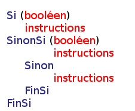
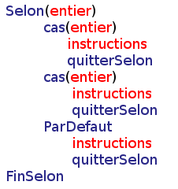

On peut tester des conditions sur les variables afin d’effectuer des instructions différentes selon ces conditions.
TESTS CONDITIONNELS
Si Sinon
Dans le test Si FinSI, les conditions renvoient obligatoirement à un booléen ou une expression booléenne.
Les tests conditionnels peuvent s’emboiter grâce à l’expression SinonSi. Dans ce cas l’indentation est « en cascade ».
Selon Cas
Selon teste des conditions sur des variables de type entier
quitterSelon est optionnel, si le cas est vérifié, il permet de sortir du test conditionnel. ParDefaut renvoie à une instruction qui est exécutée si la conditions n’est vérifiée dans aucun des cas. Il est optionnel.
Les comparaisons
On peut comparer les variables du même type entre elles.
La comparaison nécessaire « et », notée & renvoie à un booléen (ou une expression booléenne).
Les deux conditions doivent être vérifiées pour effectuer l’instruction.
La comparaison suffisante « ou » se note l, elle renvoie à un booléen (ou une expression booléenne).
Une seule conditions doit être vérifiée pour effectuer l’instruction.
Tableau récapitulatif des comparateurs valides
: